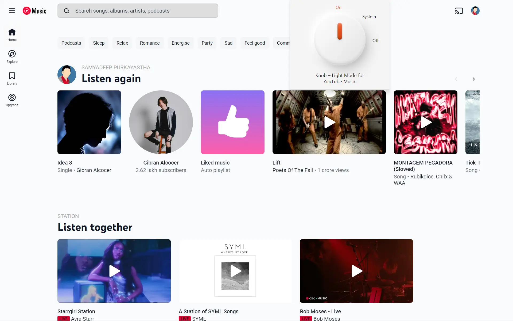

YouTube Music is dark by default. Knob brings the light.
YouTube Music's own appearance setting offers exactly one option: Dark. Knob replaces that with a three-position rotary control, and a soft neutral light theme made to be looked at for hours.
Turn it, or use the arrow keys.
-
0
Network requests. Knob never talks to a server, not for analytics, not for updates, not at all.
-
1
Stored value: the position you chose. No identifiers, no history, no telemetry of any kind.
-
3
Positions on the dial. Click to advance, or arrow through them from the keyboard.
Three positions, nothing hidden behind a submenu.
Click the dial to advance through the three. Use the arrow keys when it has focus. Changes apply instantly across every open tab, with no reload.
Built for people who insist on light mode.
Some of us just prefer light mode. That is not a strange thing to want, but YouTube Music only offers dark, so the entire app fights you. Knob puts the palette back where you want it: a cool grey rather than harsh white, with the text as the darkest thing on screen.
No inversion, no washed-out text, no brightness slider. Just a readable light theme that you set once and forget about.

Pick your browser.
Microsoft Edge
Store listing pendingInstalls directly from the Edge Add-ons store once the listing goes live.
Firefox
Store listing pendingInstalls directly from the Firefox Add-ons marketplace once the listing goes live. Requires Firefox 115 or newer.
Google Chrome
Manual install- Download the latest zip from the Releases page, or clone the repository.
- Unzip it into a permanent directory, for example
~/knob-extension. - Open
chrome://extensionsand enable Developer mode. - Click Load unpacked, then select the folder containing
manifest.json. - Pin Knob to your toolbar, open music.youtube.com, and click the icon to turn the dial.
Questions
Does this use my account or send anything anywhere?
No. Knob makes zero network requests. Your mode is saved through your browser's own storage API, inside your browser profile. If your browser account syncs settings, that single value may travel with it, exactly like any other preference.
Why did a surface turn dark again?
YouTube Music changes its internal markup often. When it does, a menu, the queue panel, or a settings dialog can slip back to dark while the rest of the page stays light. If you spot one, please open an issue describing where it happens. That is the fastest route to a fix.
Can I turn it off completely?
Yes. Set the dial to Off, or remove the extension. YouTube Music returns to its own default behaviour immediately.
What permissions does it ask for?
Two. storage, so Knob remembers which position you left the dial in, and access to
music.youtube.com, so there is a page to apply the theme to. That is the whole list.
Is this affiliated with YouTube or Google?
No. Knob is an independent open-source project, not affiliated with, endorsed by, or connected to Google LLC or YouTube.
No server, no tracking. Knob stores one value, the position you chose, using your browser's own storage. It holds no identifiers, keeps no history, and ships no analytics or third-party code.